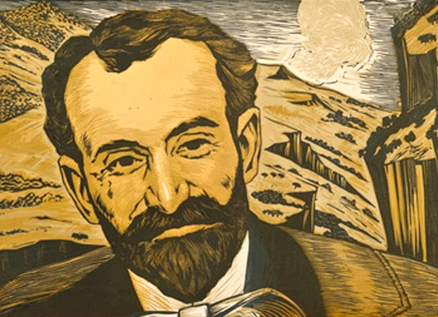

Hovhannes Tumanyan
Armenian poet, writer, translator, literary and public activist.

Photo of Hovhannes Tumanyan
Hovhannes Tumanyan was born on February 19, 1869 in the village of Dsegh, Tiflis Governorate, Russian Empire (now in Lori Province, Armenia).[1][3]
His father, Aslan (1839–1898), was the village priest known by the name Ter-Tadevos. He was an offspring of an Armenian princely family of Tumanyan, branch of the famous royal house of Mamikonian that settled in Lori in 10th–11th centuries from their original feudal fief of Taron.
His mother, Sona (1842–1936), was an avid storyteller with a particular interest in fables. Young Tumanyan was the oldest of eight children; his siblings were Rostom (1871–1915), Osan (1874–1926), Iskuhi (1878–1943), Vahan (1881–1937), Astghik (1885–1953), Arshavir (1888–1921), Artashes (1892–1916).[5]
From 1877–1879, Tumanyan attended the parochial school of Dsegh. From 1879–1883 he went to a school in Jalaloghly.[6] Tumanyan moved to Tiflis in 1883, where he attended the Nersisyan School from 1883–1887.[3] Tumanyan's wrote his first poem at the age of 12, while studying in Jalaloghly school. He lived at the teacher's house for a while and fell in love with the teacher's daughter Vergine.[6] Since 1893, Tumanyan worked for Aghbyur, Murtch, Hasker and Horizon periodicals and also was engaged in public activism.[3]
In 1899, Tumanyan came up with an idea of organizing meetings of Armenian intellectuals of the time at his house on 44 Bebutov Street in Tiflis (present-day Amaghleba 18, in Sololaki). Soon it became an influential literary group, which often gathered in the garret of Tumanyan's house. Vernatun means garret in Armenian, which was the name the group was referred to. Prominent members of the collective were Avetik Isahakyan, Derenik Demirchyan, Levon Shant, Ghazaros Aghayan, Perch Proshyan, Nikol Aghbalian, Alexander Shirvanzade, Nar-Dos, Vrtanes Papazyan, Vahan Terian, Leo, Stepan Lisitsyan, Mariam Tumanyan, Gevorg Bashinjagyan and many other significant Armenian figures of early 20th century. With some pauses, it existed until 1908.[3]
In 1912 Tumanyan was elected the president of the Company of Caucasus Armenian Writers.[3]
In the fall of 1921, Tumanyan went to Constantinople to find support of Armenian refugees. After months spent there, he returned ill. After surgery in 1922, he started to get better. But in September, Tumanyan's disease started to progress again. He was transferred to a hospital in Moscow, where he died on March 23, 1923.[7]
Tovhannes Tumanyans Wiki